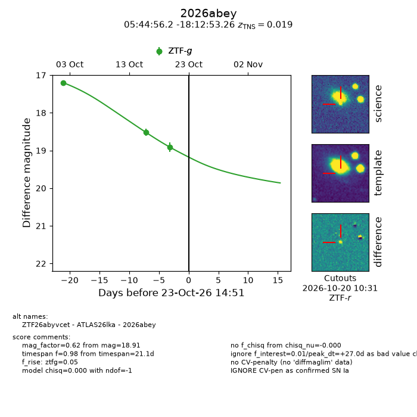
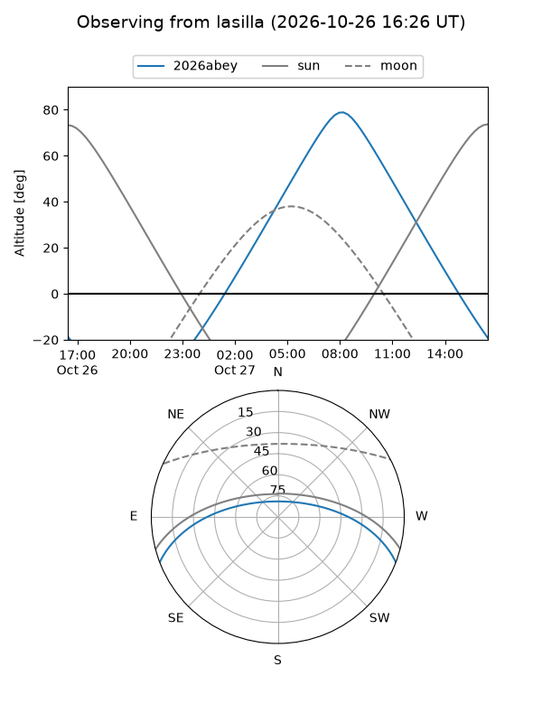
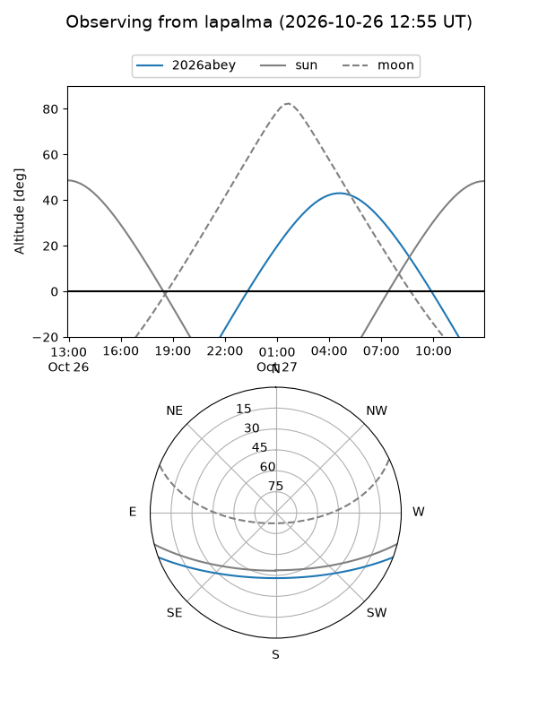
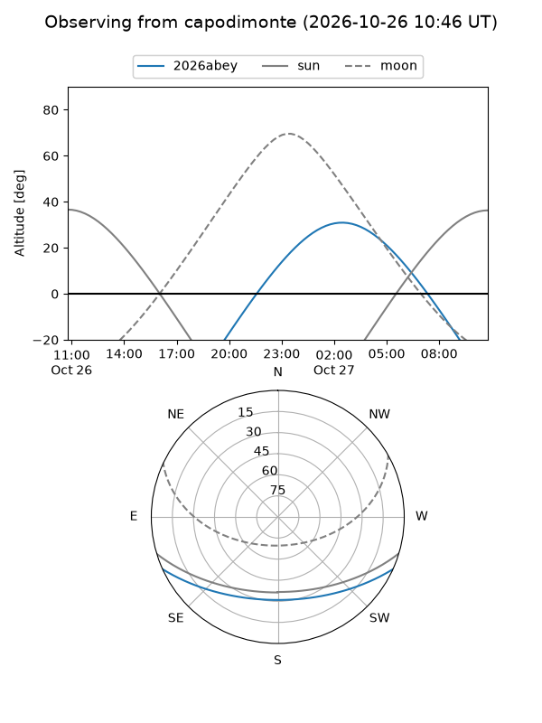
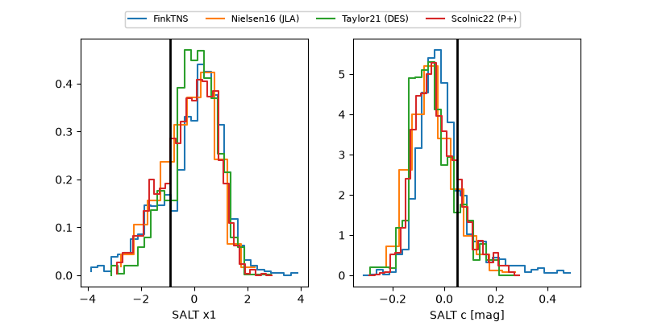

2026abey
Target 2026abey at 2026-10-23 14:54
Aliases and brokers:
FINK-ZTF: ztf.fink-portal.org/ZTF26abyvcet
Lasair-ZTF: lasair-ztf.lsst.ac.uk/objects/ZTF26abyvcet
ALeRCE-ZTF: alerce.online/object/ZTF26abyvcet
YSE-PZ: ziggy.ucolick.org/yse/transient_detail/2026abey
TNS name: wis-tns.org/object/2026abey
Direct TNS query: direct search
alt names
ZTF26abyvcet (ztf,fink_ztf)
2026abey (tns,yse)
ATLAS26lka (atlas)
Coordinates:
equatorial (ra, dec) = 86.2340,-18.21479
equatorial (HMS+DMS) = 05:44:56.16,-18:12:53.26
galactic (l, b) = (222.5516,-22.60714)
Flags:
TNS type: SN Ia
TNS redshift: 0.0190
peak dt: +27.0
Photometry:
last ztfg=18.91
3 ztfg detections
Lightcurve

Visibility



Additional plots
